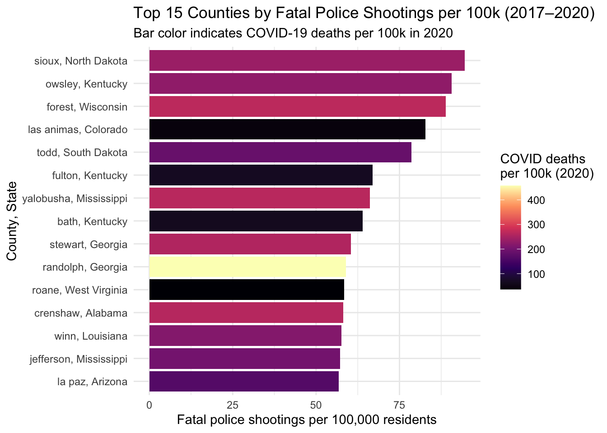
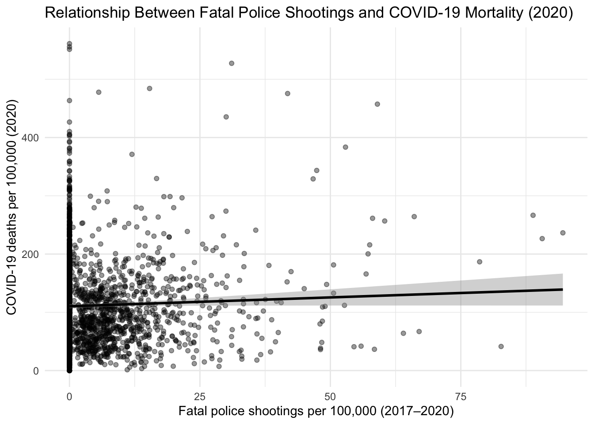
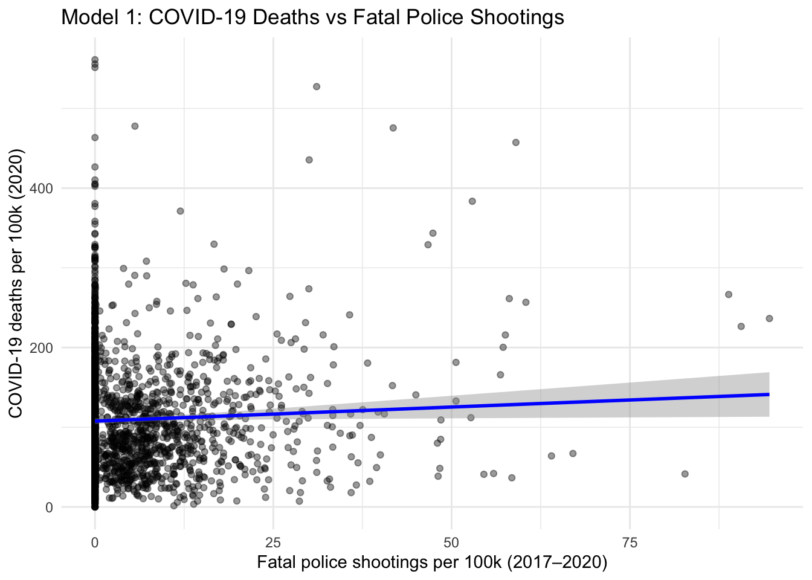
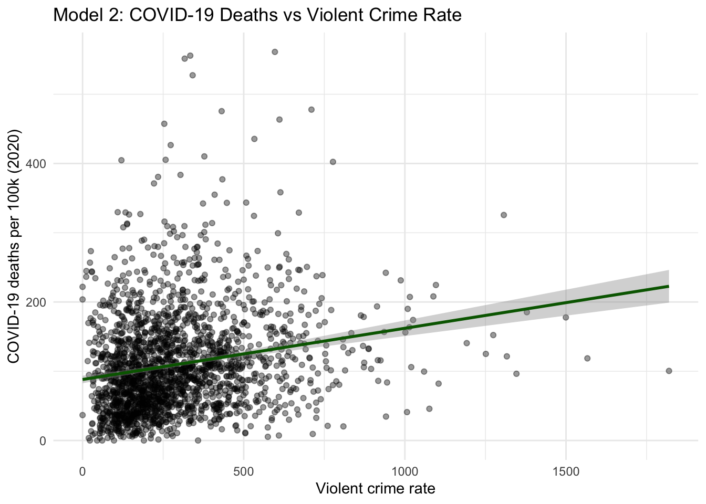
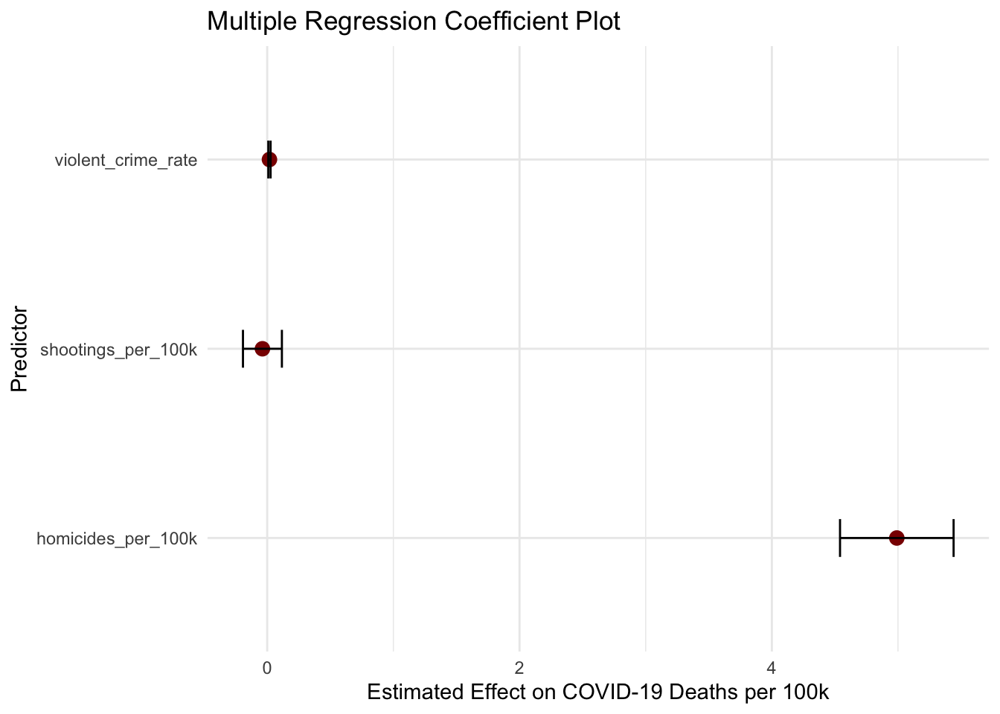

Violence and Covid

Introduction
The COVID-19 pandemic reshaped nearly every aspect of public health—yet one of the most concerning and less discussed trends was the simultaneous rise in community violence. According to the Center for American Progress, gun violence surged during the pandemic, with structural inequities and community-level vulnerabilities playing a major role.You can read more about this in their article: “COVID-19’s Impact on Gun Violence in America”.
Motivated by this national pattern, this analysis explores whether homicide rates, fatal police shootings, and overall violent crime rates were related to COVID-19 cases and deaths at the U.S. county level. By combining county-level violence indicators with pandemic outcomes, we aim to understand whether communities already burdened by structural violence experienced disproportionately severe effects during COVID-19.
#Visualizations

This plot highlights the 15 counties with the highest fatal police shooting rates between 2017 and 2020. The bar height shows shootings per 100,000 residents, and the fill color shows COVID-19 deaths per 100,000 in 2020. It displace whether places with high exposure to police violence also experienced high COVID mortality.

This scatterplot illustrates the relationship between fatal police shootings per 100,000 residents (summed from 2017 to 2020) and COVID-19 deaths per 100,000 in 2020 across U.S. counties. The points represent individual counties, and the fitted linear trend line shows that there is no strong association between fatal police shootings and COVID-19 mortality. Most counties cluster near zero fatal shootings, and the regression line is nearly flat, suggesting that the level of police violence in a county did not meaningfully predict COVID-19 death rates.
Regression Models
##
## Call:
## lm(formula = covid_deaths_per_100k_2020 ~ shootings_per_100k,
## data = analysis_df)
##
## Residuals:
## Min 1Q Median 3Q Max
## -110.61 -52.55 -13.57 34.22 453.53
##
## Coefficients:
## Estimate Std. Error t value Pr(>|t|)
## (Intercept) 107.6355 1.8396 58.510 <2e-16 ***
## shootings_per_100k 0.3538 0.1595 2.218 0.0267 *
## ---
## Signif. codes: 0 '***' 0.001 '**' 0.01 '*' 0.05 '.' 0.1 ' ' 1
##
## Residual standard error: 72.31 on 2064 degrees of freedom
## Multiple R-squared: 0.002377, Adjusted R-squared: 0.001894
## F-statistic: 4.919 on 1 and 2064 DF, p-value: 0.02668
Model 1: This scatterplot explores whether counties with more fatal police shootings also experienced higher COVID-19 mortality in 2020. Most counties have zero or very few fatal police shootings per 100k, which creates heavy clustering on the left side of the graph. The regression line is flat, indicating little to no linear relationship between fatal police shootings and COVID-19 death rates. While these forms of structural violence may be connected through deeper social factors, this crude model does not show a strong direct association.
##
## Call:
## lm(formula = covid_deaths_per_100k_2020 ~ violent_crime_rate,
## data = analysis_df)
##
## Residuals:
## Min 1Q Median 3Q Max
## -131.52 -49.58 -13.16 32.58 442.97
##
## Coefficients:
## Estimate Std. Error t value Pr(>|t|)
## (Intercept) 88.064017 2.765375 31.845 <2e-16 ***
## violent_crime_rate 0.073989 0.007816 9.467 <2e-16 ***
## ---
## Signif. codes: 0 '***' 0.001 '**' 0.01 '*' 0.05 '.' 0.1 ' ' 1
##
## Residual standard error: 70.88 on 2064 degrees of freedom
## Multiple R-squared: 0.04161, Adjusted R-squared: 0.04115
## F-statistic: 89.62 on 1 and 2064 DF, p-value: < 2.2e-16
Model 2: This plot examines whether violent crime rates are associated with COVID-19 mortality at the county level. Here, the regression line slopes upward, suggesting that counties with higher violent crime rates tend to experience higher COVID-19 deaths per 100k. Although the relationship is still noisy, the positive trend indicates that broader community violence may be linked with higher pandemic vulnerability.
##
## Call:
## lm(formula = covid_deaths_per_100k_2020 ~ shootings_per_100k +
## violent_crime_rate + homicides_per_100k, data = analysis_df)
##
## Residuals:
## Min 1Q Median 3Q Max
## -191.98 -49.00 -12.09 33.72 425.28
##
## Coefficients:
## Estimate Std. Error t value Pr(>|t|)
## (Intercept) 79.354083 2.858283 27.763 <2e-16 ***
## shootings_per_100k -0.037902 0.154306 -0.246 0.8060
## violent_crime_rate 0.017735 0.009107 1.947 0.0516 .
## homicides_per_100k 4.990649 0.450110 11.088 <2e-16 ***
## ---
## Signif. codes: 0 '***' 0.001 '**' 0.01 '*' 0.05 '.' 0.1 ' ' 1
##
## Residual standard error: 68.85 on 2062 degrees of freedom
## Multiple R-squared: 0.09643, Adjusted R-squared: 0.09512
## F-statistic: 73.36 on 3 and 2062 DF, p-value: < 2.2e-16
Model 3: In multiple regression, homicide rates and violent crime were strong predictors of COVID-19 mortality, while fatal police shootings were not. This suggests that structural violence and long-term community disadvantage, rather than isolated rare police encounters, were more strongly linked to COVID-19 vulnerability.
The Correlation Matrix provides a comprehensive view of how each variable in this analysis relates to one another-COVID-19 cases and deaths, violent crime rates, homicide rates, and fatal police shootings. This allows us to quickly identify which forms of violence have the strongest statistical associations with COVID-19 outcomes at the county level. By visualizing these relationships side-by-side, we can better understand whether counties with higher structural violence also experienced disproportionate impacts during the pandemic.